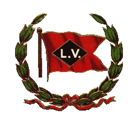

|
Black Diamond Express. 1896 
The Lehigh Valley
Railroad, like all railroads of the 19th Century,
offered passenger service everywhere it went. When
the LV finally completed its own mainline all the
way to Buffalo, New York in 1892,
The LV had a lot of competition on this route..three other Class-1 systems already offered service between New York City and Buffalo, the DL&W, the Erie and the New York Central. Even though the LV
was the last railroad in the game, it built a
world-class train that could compete with anything
the other systems The LV ordered two
complete luxury train sets from Pullman. The wood
cars, the best the Victorian era had to offer,
arrived new from Pullman in 1896. Each four-car
trainset consisted of one cafe/baggage car:
Pullman Builders
photo - 1896
Pullman Builders
photo - 1896
Pullman Builders
photo - 1896
The new "Black Diamond Express" was an instant hit, and would remain the LV's premier passenger train for the next 63 years. The train made its
first run on Monday, May 18, 1896.
The full consist of cars is not yet known, im hoping further research will fill in the roster. We know there were two complete trainsets, because one eastbound and one westbound train ran each day. That makes at least two cafe/baggage cars, four coaches, and two parlor/observation cars. Photo evidence shows there was at least one backup cafe/baggage car. History has recorded that three parlor/observation cars existed, the "Seneca", "Ganoga" and "Lehigh". Since we can confirm three parlor cars and three cafe/baggage cars, it only stands to reason there were also backup coaches..but how many, and what numbers they had, is not yet known. Consist of the 1896 Black Diamond
Express. Baggage/Cafe
cars. Coaches
There
were
at least four coachs, two for each
trainset. and since we know there were "extra" or
"backup" cafe/baggage cars and parlor cars, it is
very likely there were also extra coaches. perhaps
6 or 7 total. Parlor/Observation
cars. Locomotives of the
The Black Diamond Express came to life at the very end of the 4-4-0 "American" passenger locomotive era. The Classic 4-4-0 was, by far, the most common locomotive wheel arrangement of the 19th Century, being used for both freight and passenger service. In Freight service, the 4-4-0 "American" ruled the rails from the 1830's through the 1860's, however by the Civil War era, freight trains had grown so large and heavy that the 4-4-0 could no longer handle the job. The 4-4-0 in freight service was replaced by the 2-6-0 "mogul", 2-8-0 "consolidation" and other wheel arrangements beginning in the 1860's. The LV, being in the
business of hauling heavy loads of coal, was
an early proponent of these more modern, heavier,
powerful locomotives, and the LV designed the
world's first 2-8-0 road engine,
Baldwin Builders
photo - 1866
Even though the 4-4-0 American was obsolete in freight service 30 years before the Black Diamond Express, in passenger service, the 4-4-0 was still very much in use in the early 1890's, and had evolved into a very modern thoroughbred. Passenger trains of the 1890's were still of wood construction, the era of the "heavyweight" steel passenger car had not yet arrived. Passenger locomotives needed to haul light, fast trains..the 4-4-0, with its high drivers, was still an ideal passenger locomotive. Many historians consider the ultimate expression of 4-4-0 technology to be the famous New York Central No. 999.
The 999 was designed and built by New York Central master mechanic William Buchanan in 1893. (only three years before the start of the Black Diamond Express) and she was built for one purpose only..speed! On May 9, 1893, engineer Charlie Hogan and fireman Al Elliot brought the 999 up to a record setting 112 miles per hour near Batavia, NY, immortalizing the 999 as the ultimate "Queen of Speed" (Today the 999 still
exists! in Chicago, although sadly lacking her
original 86" drivers) So as we can see, the 4-4-0 Amercian type was still very much in use as modern passenger power in the early 1890's..and the LV was no exception. When the Black Diamond Express was in its planning stages, the LV had a fleet of very capable 4-4-0 passenger locomotives, some built right up to 1895. And when the train
made its maiden run on May 18, 1896, the 4-4-0
passenger locomotive was still the "state of the
art" on the LV roster. Baldwin Builders
photo - 1895
Lehigh Valley
Railroad photo. May 16, 1896
of the train posing at the Easton, PA,
station, also showing a 4-4-0 in the lead, is the
first known photo of the complete train. The photo
was taken on May 16, two days before the inaugural
run. It is not known if the 4-4-0 "James Donnelly" was used as one of the locomotives on the first run two days later. We have historic newspaper accounts (see the articles below) that prove the 4-4-0's were used in the early weeks and months of the trains operation..but something new was on the horizon! The Atlantic type, the 4-4-2 passenger locomotive, had recently been designed, and it quickly became the successor to the 4-4-0 in passenger service. The 4-4-2
Atlantic was first built by Baldwin in 1894
for the Atlantic Coast Line railroad (which gave
the name "Atlantic" to the class) The
The LV found that its passenger 4-4-0's, while excellent machines in regular service, werent quite up to the task of keeping the new express train on schedule. The LV must have liked what it saw in the new technology of the 4-4-2 Atlantic, for it quickly ordered Five Atlantic locomotives from Baldwin for the Black Diamond Express. It is not yet known if the LV intended to use the new Atlantics from the start for the Black Diamond Express, ordering them at the same time as the passenger cars, but the new locomotives were perhaps late? so the railroad had to "make do" with the 4-4-0's until the Atlantics arrived. Or.. Were the five new Atlantics ordered only after the LV found the 4-4-0's were a bit lacking? and only then was the decision made to order the Atlantics? I dont know..but the Atlantics arrived very quickly..in July 1896, only two months after the train began..which implies they were perhaps ordered before the train began service, were intended all-along to be the power for the new train, and were perhaps late in arriving from the builder. Conversly, a bit of information that implies the latter is possibly true, (that the LV ordered the Atlantics only after trying out the 4-4-0's first and finding them not up to task) appeared in The Railway and Locomotive Historical Society, Bulletin No. 126, dated April 1972: "(H) 664-668. Five Atlantics were acquired in 1896 to replace 4-4-0's which were found unable to maintain the schedule of the Black Diamond Express. These were the first 4-4-2's on the LV. The five car (205 ton) NY to Buffalo train was expected to complete its run at an average speed just over 46 mph-a difficult task considering ten stops and the heavy grades of mountain divisions. But the Atlantics were equal to the job and during 1897 produced an on-time record of over 90%". (Thanks to Harry and Lee for that bit of data.) Im hoping the date
the locomotives were ordered by the LV can
be found, which would solve this particular
mystery. In any event, only two months after the Black Diamond Express began service, the most modern locomotives on the LV up to this point had arrived. The five new Baldwin Atlantics, the first of this wheel arrangement on the LV, (and among the earliest Atlantics built) quickly became the preferred LV passenger power..so much so, that four identical copies were ordered two years later in 1898, then eight more in 1900, and eventually the LV would roster a total of 39 Atlantic type locomotives, which would be the primary passenger power for the decade between 1896 and 1906. The first 5
Atlantics of 1896 were number 664, 665, 666, 667
and 668. 664, the "Class
unit" poses for her portrait.
LV 666 is seen at
the Loder Street crossing in Waverly, NY.
667 is seen at
Geneva. The oldest photo of
these locomotives is the Baldwin builders photo,
taken in July of 1896. Number 668, below, was
chosen to represent the class for the official
portrait. Baldwin Builders
photo - 1896
668 makes a station
stop at Sayre with an eastbound train.
A nice drawing of
668 exists, which I believe (but am not 100%
certain) Drop me an email if you would like a full resolution copy of the drawing. And those are all
the photos I have of the first five Atlantics,
A photo of 667 wearing her later number, 2323, is on page xx of the Archer book. Concerning the
famous publicity photo/painting of the early
Several sources state that this is a photo of the train on its inaugural run in 1896, other sources say "1898", but both dates are clearly incorrect. Two versions of this image are known to exist. The earlier version can be seen here, on the Catskill Archive page. That is a reprint of a 1907 article about the train. Notice the locomotive in the photo is No. 675. Atlantic 675 was one of the third batch of Atlantics, built in 1900, so clearly the original photo was taken during or after 1900. The second, "final" version of the photo/painting can be seen above. The original photo has been retouched, hand-colored, and modified. Also notice the locomotive number has been changed, to No. 2451. This is a "post 1905" number, so this painting was created after 1905. Probably actually created after 1907, since the 1907 article shows the original version, with the locomotive still numbured 675. Also, the color of
the coaches is green, which might not have
been the original color of the 1896 train, but
likely was in use by 1905-1907. so this famous
image is really a post-1905 color painting,
created from a The book "The Handsomest trains in the World" says "For many years, this scene hung not only in the corporate offices, but also in the city hall at Plainfield, New Jersey." anyone know if
either of the paintings still exist today?
Newspaper articles. While doing
research for this page, three newspaper articles
have The earliest
newspaper account known so far appeared in the
Boston Herald on May 19, 1896, the day after the
first run.
The second article
is from Geneva, NY on May 22, 1896.
And this third article is from four decades later, in 1940, on the eve of the new updated, streamlined Black Diamond Express. About a Black Diamond engineer from 1896 who was still a resident of Wilkes Barre in 1940.
Thanks to Harry
(Bowmans_Creek_Branch on the forums) for finding,
scanning, and mailing me a copy of the 1940 Wilkes
Barre article.. And thanks to Paul ("TB Diamond" on the forums) for the Geneva and Boston articles, which can also be found on-line at James Mack's LV site. Those are all the articles I have so far..Im planning to visit the Buffalo, Rochester, Ithaca and Sayre libraries to search for more 1896 newspaper articles, im especially hoping some of them will mention the color scheme! I will post more information here as it is discovered. There are also at
least two movies of the early Black Diamond
Express! The 1900 movie can
be seen here.
Return
to Scot's main page: Scot Lawrence
|
||